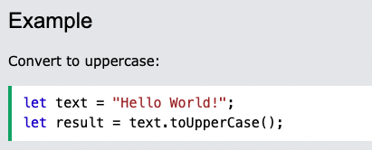
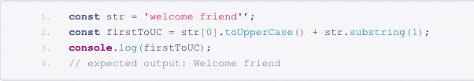

What happened when I got blocked on a simple problem?
Not every problem is easy to solve and learning web development brings with it a plethora of problems to be solved.
I was working through some JavaScript programming problems and came across a curly problem. How to capitalise the first letter of each word in JavaScript. Of course there is no one universal solution to solve a problem but I will try to show you one simple way to solve this problem.
JavaScripts toUpperCase() method converts a string object into a new string consisting of the contents of the first string, with all alphabetic characters converted to be upper case (i.e. capitalised).
With the use of a few problem solving techniques I managed to work my way through the process of capitalising the first letter of each word in a particular string. The following explains some of the problem solving techniques I used and how they helped me.
When I got stuck I first tried to work out the problem logically by just trying some code that I knew was close to what I thought the answer would be. I tried a few different ways of writing the code. When I had exhausted all avenues with this technique I decided to try googling the answer. This led me to several interesting websites on how to capitalise the first letter of multiple strings. This was helpful and I was able to get a substantial way through answering the test question. However, there was some pretty technical language and the depth was a little more than I needed. I needed to bring the problem back to more simple terms.
I tried writing pseudocode, that is, writing a plain language description of the steps in the algorithm. I seemed to be able to do this ok. I also followed the error messages with my pseudocode and this did help me to move forward with baby steps. I tried console.logging but I have not quite got the hang of that and do need to research it a bit more to feel comfortable. However, when I realised I needed a little more help I put the question out to my peers and asked for a hint. I also asked my coach. Fortunately I was able to find the correct answer and test it and, yahoo, a small win to celebrate!
It was an uncomfortable process to go through, almost painful! It felt very frustrating knowing that I knew how to complete some of the code, just not all of the code. There were moments when I wanted to throw in the towel, but I am not a quitter, so I persevered. I really don’t like asking my peers for help as it makes me vulnerable and open to people thinking I should be somewhere else other than trying to find a solution to this problem. But I sucked it up and asked, and what was interesting was that other people followed along on my question thread and it helped them as well.
Through this process, I have learned that there are many ways to find a solution to a simple or even a difficult problem. Perseverance and risk taking are keys to success.
How I solved this problem in an elegant way
The toUppercase() method returns the calling string value converted to uppercase. Image below;
Another example demonstrattes how easy it is to convert to upper case;
Hint: If you want to convert all letters in a string to lowercase instead, use the similar toLowerCase() method.
How to convert only the first letter of a string
Converting just the first letter of a string to an equivalent uppercase value requires three steps:
- Locate the first letter and call toUpperCase() on it specifically
- Trim the first character off the remainder of the string, producing a new string without the first character
- Combine the two strings together
For the second part use the substring() method to produce a string that consists of all the characters but the first.
The third step is just simple concatenation - combine the two strings together using the + operator.
Below is an example of how to accomplish this in JavaScript:
This was in interesting process, one that I really enjoyed completing. I know there is still so much I have to learn, but with practice I will win!
I have learned, through this elegant process, that there are many ways to problem solve, but the best way is to not give up! The best way is to use the problem solving techniques, because there is always something that works.
Some excellent problem solving techniques
Pseudocode
I found using pseudocode to be a really helpful technique when trying to think about the syntax instructions in plain language. This is my go to technique when I am trying to break the problem down into small simple steps.
Try something
It really helps when you do get blocked just to try something rather than sit for hours staring the screen getting nowhere. I like this and need to remind myself to just try something.
The Rubber Ducky method
This is a great method to use, puts me in a child like state, always good for creativity. This is a great debugging technique to use, where you explain the program line-by-line to a rubber duck.
Reading error messages
This is a great technique as it does point you in the right direction to find any bugs. It is easy because the message is right there in front of you.
Console.logging
Always helpful and useful for testing purposes!
Googling
Ahhh, the wonderful Google, need I say more.
Asking peers for helped
Something I find challenging, but it is a fantastic space to get ideas and information.
Asking coaches for help
The coaches are amazing!
Improving the process through reflection
I love reflection, accept when it is in the middle of the night! But, when I do wake up and reflect on the processes used, or just how the day went I generally think of better ways of completing tasks. I like to thoughtfully consider situations and try to work problems out by using skills of analysis, communication and collaboration.